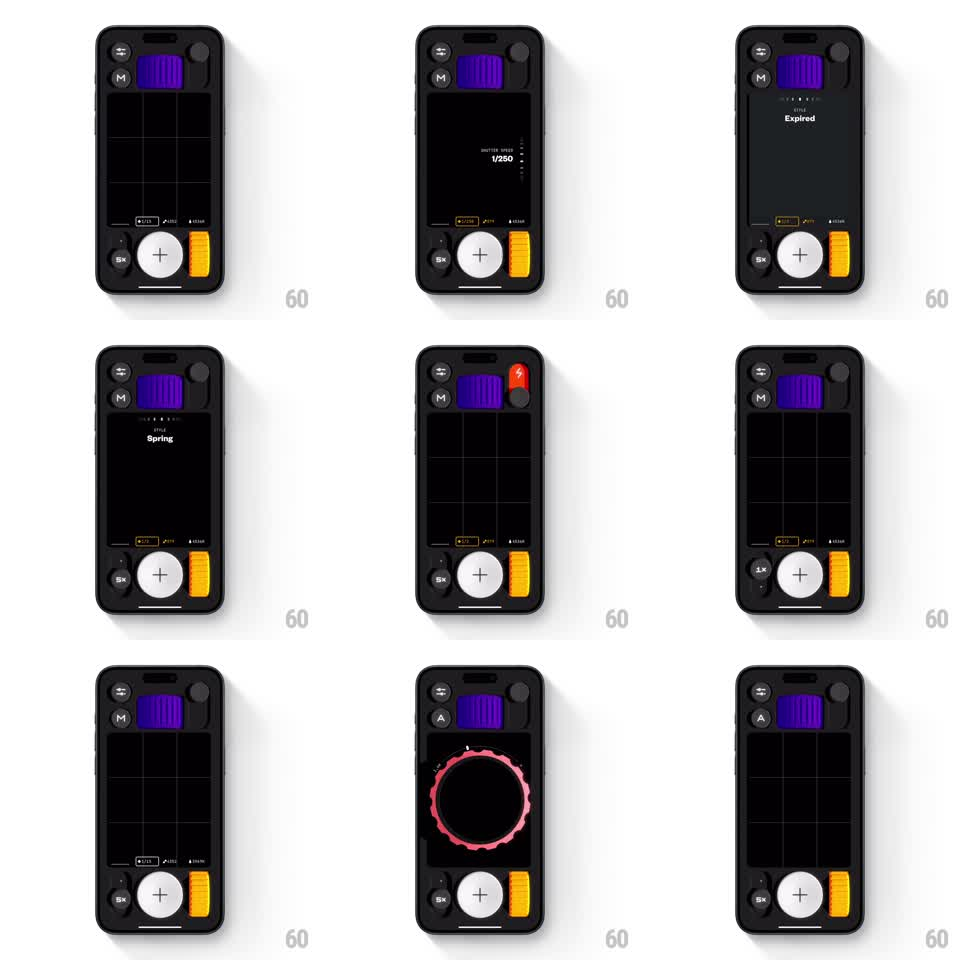

Media
Frame-by-frame

Rebuild this interaction 1:1: Not Boring Camera's tactile control dials - swiping the on-screen controls scrubs shutter speed, zoom, and capture styles with springy detents, live value readouts, and a pink waveform shutter ring.

Rebuild this interaction 1:1: Not Boring Camera's tactile control dials - swiping the on-screen controls scrubs shutter speed, zoom, and capture styles with springy detents, live value readouts, and a pink waveform shutter ring.
## Integration
Integration: stack-agnostic spec - springs given as stiffness/damping, timed motions as duration + curve; map every value to your framework and animation library of choice.
## Scene
Black camera interface over a dark grid viewfinder: purple film door at top, a big white shutter button with a yellow grip pill beside it, small round toggles (S / M, 5x) at the edges, and a center readout that surfaces what is being scrubbed ("SHUTTER SPEED 1/250", "STYLE Spring", "Expired"). A pink jagged waveform ring blooms around the focus point on capture.
## Motion spec
Pattern: swipe-scrubbed control dials with springy detents and live readouts.
- Swiping vertically on a control scrubs its value 1:1 with rubber-band at the ends (0.4x past limits); values tick through detents with a soft haptic tick each.
- The readout label crossfades in on first touch (150ms), updates live (tabular numerals), and fades 500ms after release.
- The S/M auto-manual toggle flips with a small flip-scale animation (scaleX 1 -> 0 -> 1, 200ms), the letter swapping at the midpoint.
- The zoom pill (5x) steps through levels on tap with a pop (scale 1 -> 1.15 -> 1, spring ~340/14) and the viewfinder grid scales to match.
- On capture: the pink waveform ring erupts from the focus point (scale 0.3 -> 1.4, fade, 500ms, ease-out) with a springy shutter squash (scale 1 -> 0.85 -> 1, spring ~380/16).
- The yellow grip idles with a subtle sheen sweep every 6s.
## Calibration
- Detents feel mechanical: one tick per stop, no glide-through on slow swipes.
- Rubber-band resistance increases with overscroll distance.
## Reduced motion
Scrubbing keeps 1:1 mapping but kills the waveform bloom and shutter squash.
## Don't miss
- The readout only exists while scrubbing - the resting UI is clean.
- The purple film door, yellow grip, and white shutter are brand-fixed; controls float around them.